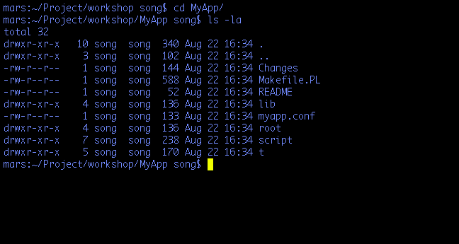

한송희
song @ #perl-kr
purewish1@gmail.com
The Simplest Web Application
by Catalyst
created "MyApp"
created "MyApp/script"
created "MyApp/lib"
created "MyApp/root"
...
created "MyApp/t"
created "MyApp/lib/MyApp"
created "MyApp/lib/MyApp/Model"
created "MyApp/lib/MyApp/View"
created "MyApp/lib/MyApp/Controller"
created "MyApp/myapp.conf"
created "MyApp/lib/MyApp.pm"
created "MyApp/lib/MyApp/Controller/Root.pm"
...
created "MyApp/script/myapp_server.pl"
created "MyApp/script/myapp_test.pl"
created "MyApp/script/myapp_create.pl"

Welcome to Catalyst
http://localhost:3000/
sub index :Path :Args(0) {
my ( $self, $c ) = @_;
# Hello World
$c->response->body( $c->welcome_message );
}
Add Up to Your Application
exists "/Users/song/Project/workshop/MyApp/script/../lib/MyApp/Controller"
exists "/Users/song/Project/workshop/MyApp/script/../t"
created "/Users/song/Project/workshop/MyApp/script/../lib/MyApp/Controller/Foo.pm"
created "/Users/song/Project/workshop/MyApp/script/../t/controller_Foo.t"
sub index :Path :Args(0) {
my ( $self, $c ) = @_;
$c->response->body('Matched MyApp::Controller::Foo in Foo.');
}
package Foo;
sub bar : Path('bar') {..}
http://localhost:3000/foo/bar
sub bar : Path('/bar') {..}
http://localhost:3000/bar
package Foo;
sub bar : Local {..}
http://localhost:3000/foo/bar
package Foo;
sub bar : Global {..}
http://localhost:3000/bar
package Foo;
sub bar : Regex('^bar') {..}
http://localhost:3000/bar
http://localhost:3000/bar_baz
package Foo;
sub bar : LocalRegex('^bar') {..}
http://localhost:3000/foo/bar
http://localhost:3000/foo/bar_baz
package Foo;
sub setup : Chained('/') PathPart('foo') Args(1) {..}
sub bar : Chanied('/setup') Args(0) {..}
http://localhost:3000/setup/*/bar
exists "/Users/song/Project/workshop/MyApp/script/../lib/MyApp/View"
exists "/Users/song/Project/workshop/MyApp/script/../t"
created "/Users/song/Project/workshop/MyApp/script/../lib/MyApp/View/TT.pm"
created "/Users/song/Project/workshop/MyApp/script/../t/view_TT.t"
package MyApp::View::TT;
use strict;
use base 'Catalyst::View::TT';
__PACKAGE__->config(TEMPLATE_EXTENSION => '.tt');
exists "/Users/song/Project/workshop/MyApp/script/../lib/MyApp/DB"
exists "/Users/song/Project/workshop/MyApp/script/../t"
created "/Users/song/Project/workshop/MyApp/script/../lib/MyApp/DB.pm"
created "/Users/song/Project/workshop/MyApp/script/../t/view_DB.t"
package MyApp::Model::DB;
use strict;
use base 'Catalyst::Model::DBIC::Schema';
1;
Flows
require MyApp;
MyApp->run( $port, $host, {
argv => \@argv,
'fork' => $fork,
keepalive => $keepalive,
restart => $restart,
restart_delay => $restart_delay,
restart_regex => qr/$restart_regex/,
restart_directory => $restart_directory,
follow_symlinks => $follow_symlinks,
} );
__PACKAGE__->_dispatch_steps( [qw/_BEGIN _AUTO _ACTION/] );
sub _DISPATCH : Private {
my ( $self, $c ) = @_;
foreach my $disp ( @{ $self->_dispatch_steps } ) {
last unless $c->forward($disp);
}
$c->forward('_END');
}
Use Plugins
use Catalyst qw/
-Debug
ConfigLoader
Static::Simple
Authentication
/;
$c->user;
$c->user_exist;